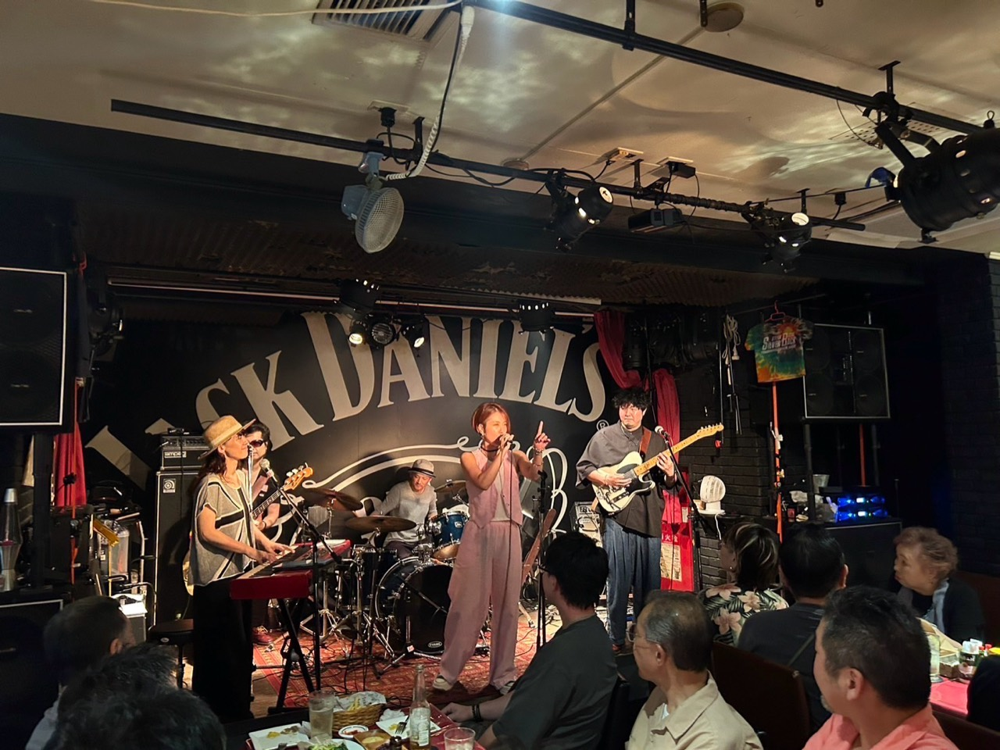
About
演奏するたび、少しずつ輪が広がっていく。
なゆたリズムは、音楽と絵が自然に重なり合う場所から生まれたバンドです。ライブハウスの照明、手拍子、笑い声、演奏の熱。そこに絵の色彩が混ざることで、その日だけの景色が立ち上がります。
肩肘を張らずに楽しめる温かさと、ステージで一気に温度が上がるライブ感。初めて来た人も、いつもの仲間も、家族も子どもも、同じリズムの中でふっと近くなる。そんな時間を大切にしています。
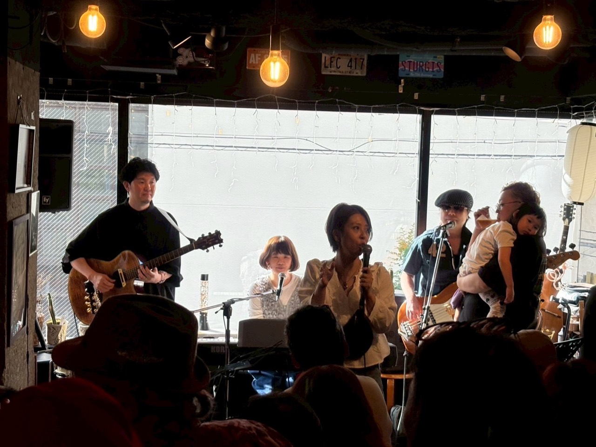
Music
まずは音から。気になったら、次はライブで。
アルバムと映像を、静かな余白の中に置きました。
Gallery
ライブの熱、絵の色、集まる人の空気。
ここは記録ではなく、小さな個展。音が終わったあとに残る表情と色を、ゆっくり見てください。
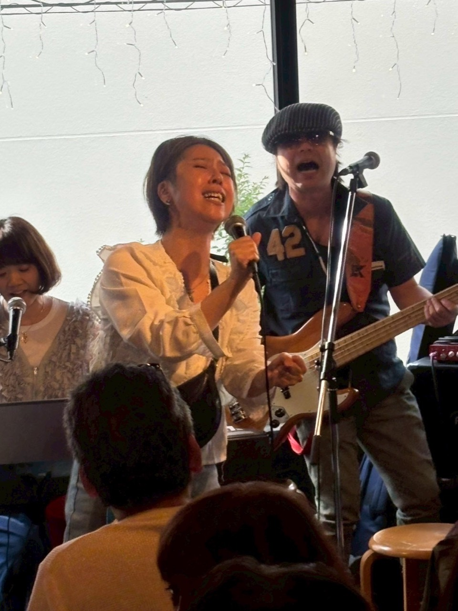
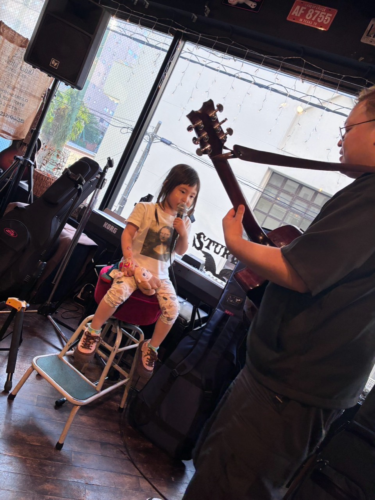
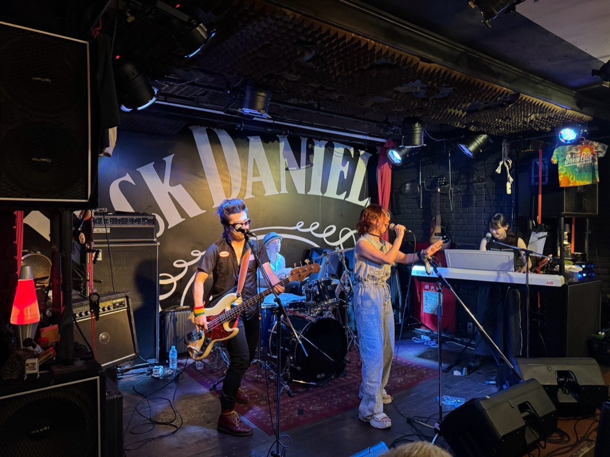
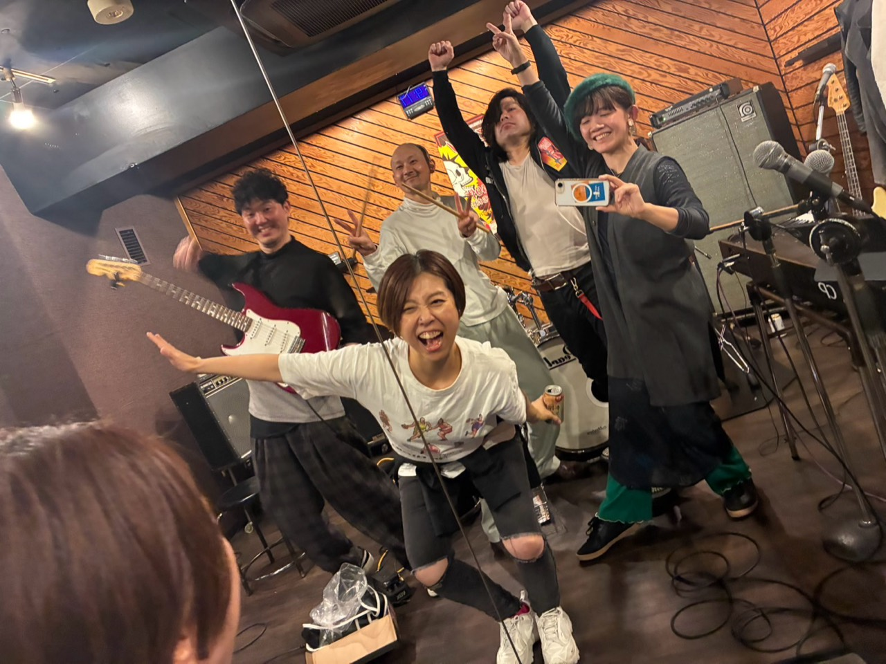
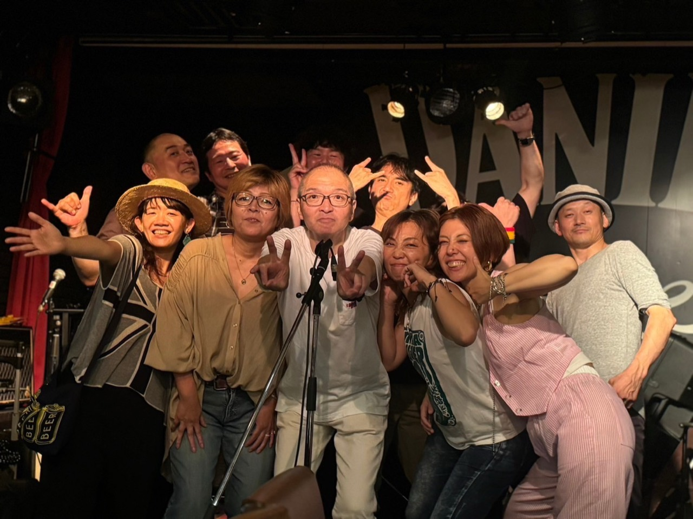
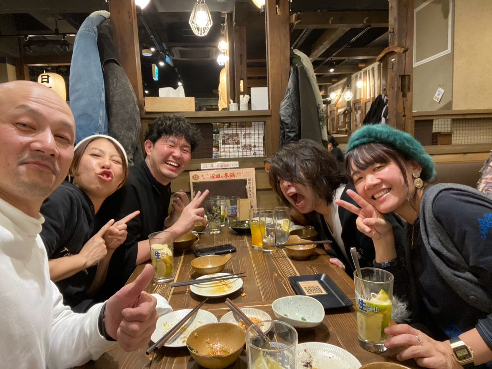
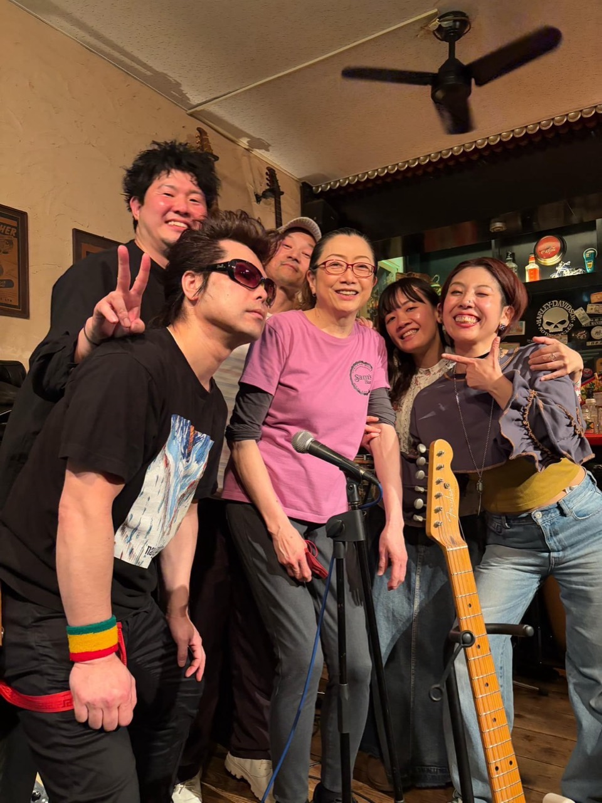
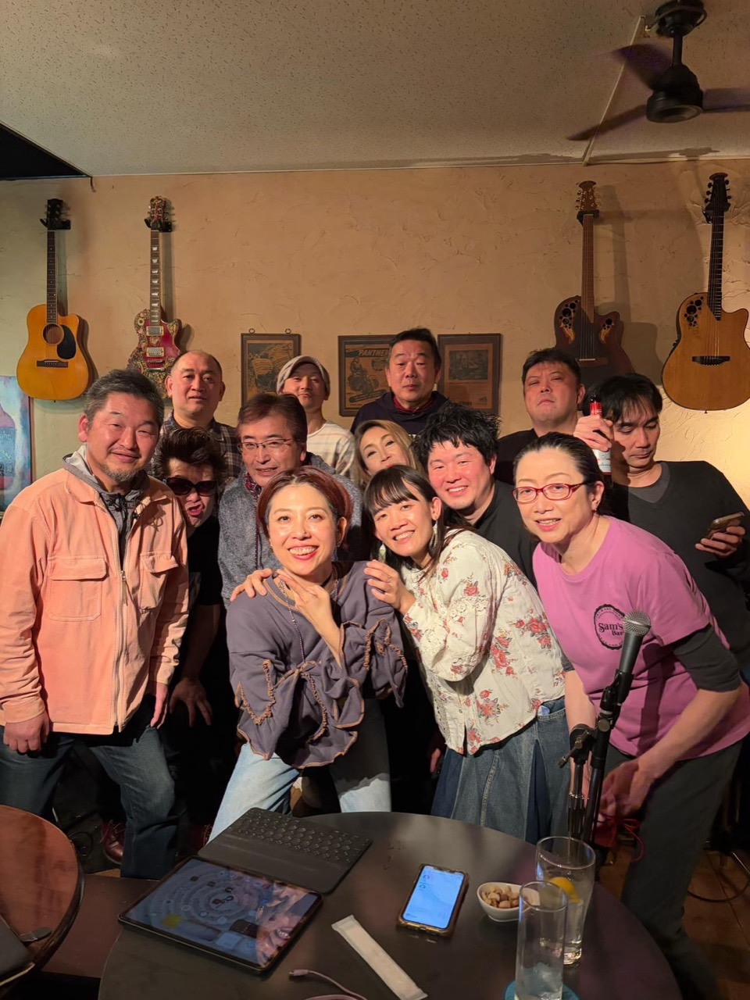
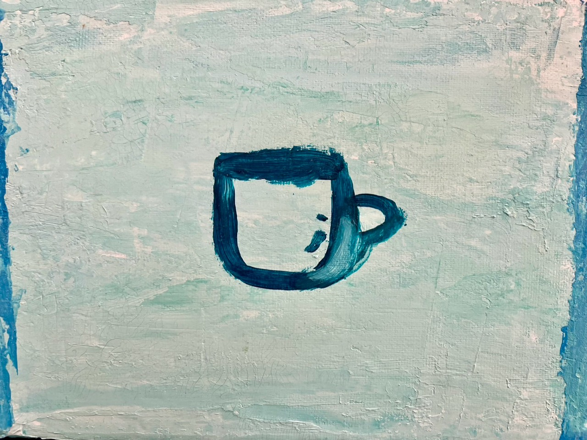
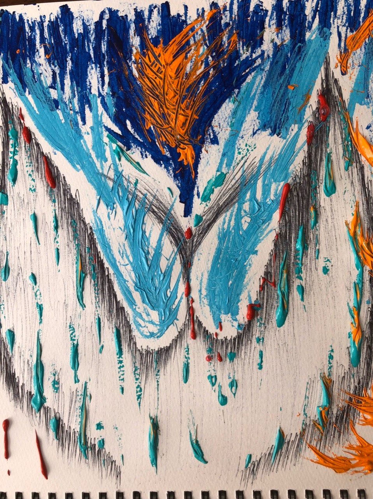
Live
次回ライブ
次に会える夜を、ここに灯しておきます。予定がひとつでも、まだ空白でも、ライブへ向かう気配が残る場所に。
2026.07.25 Sat
SILVER BACK
- 会場
- 横浜・吉田町
- 対バン
- CHOBYS
- 時間
- OPEN 19:00 / START 19:30
- 料金
- Charge ¥3,000（+2オーダー）
次の音が、ここに灯ります。
追加ライブは決まり次第、この余白に掲載します。まだ発表前の時間も、次のステージへ向かう静かな予告です。
Member
メンバーの距離感が、そのまま音になる。
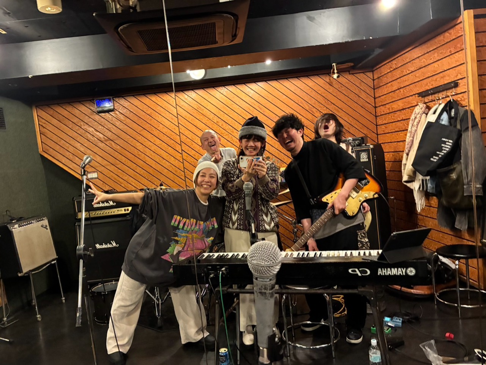
Rehearsal
音を合わせる時間
演奏が始まる前の、笑い声と集中が混ざる場所。なゆたリズムの温かさは、ここから立ち上がります。
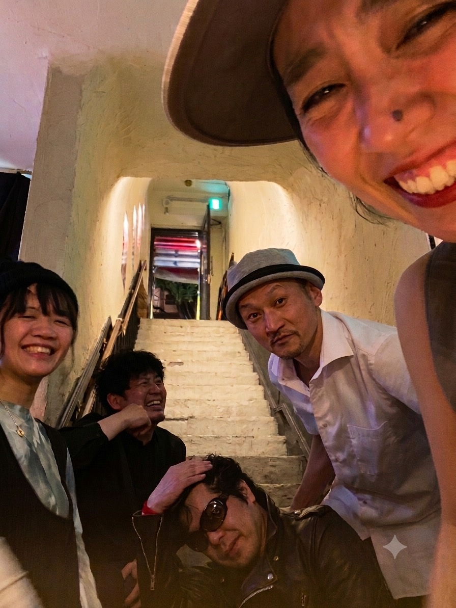
Backstage
ステージの前も後も
ライブの熱が残る帰り道まで、同じリズムでつながっている。人柄がそのまま音に出るバンドです。
Live Day
熱量が残る一枚
演奏後の表情には、その日の空気がそのまま写ります。次のライブへ向かう力になる一瞬。